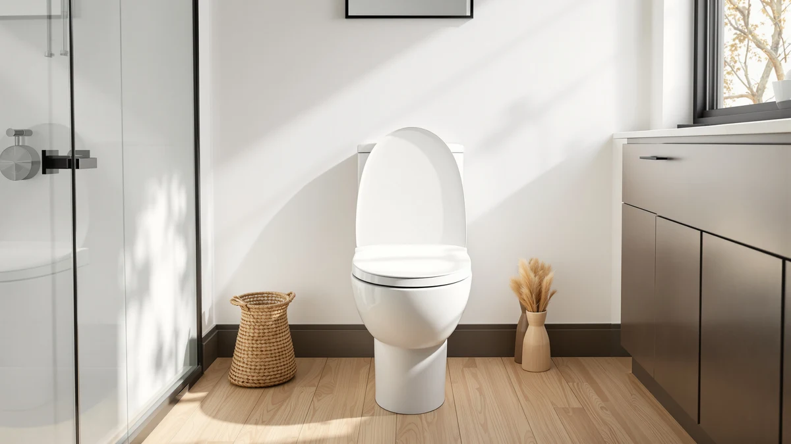

CcBello Elongated Toilet Seat Review (2026): Worth It?
Prices and picks verified as of November 2026. Independent, reader-supported reviews.


Quick Answer
This CcBello Elongated Toilet Seat Review looks at a raised elongated seat that CcBello builds from a plastic and wood-blend shell and prices at $58.99. It's a straightforward option for anyone who needs the added seat height of a riser along with elongated-bowl sizing, though CcBello hasn't published a star rating or review count for this model. If you would rather buy from a brand with a longer public review history, the three Kohler alternatives covered below are worth a look.
Our pick: Ccbello ELONGATED toilet seat risers, $58.99 Check Price on Amazon
Bottom line: our top pick is the Ccbello ELONGATED toilet seat risers for seniors at $58.99.
Things to Know Before You Buy
- It raises seat height, it doesn't replace the bowl. The CcBello Elongated Toilet Seat Risers adds height to your existing elongated bowl rather than functioning like a typical hinge-and-lid seat.
- No published rating yet. CcBello hasn't listed a star rating or review count for this model, so this CcBello Elongated Toilet Seat Review leans on construction and price rather than a large base of verified feedback.
- The shell blends plastic and wood. That combination changes how it feels and how you should clean it compared with an all-plastic riser.
- Elongated fit only. Measure your bowl before you order, since this model fits elongated toilets and won't seat properly on a round bowl.
- Standard seats cost less here. At $58.99, it sits above the $50.25 to $56.98 range of the three Kohler elongated seats covered later in this review, though none of those add the extra height.
This CcBello Elongated Toilet Seat Review breaks down what $58.99 buys: a raised seat that CcBello builds from a plastic and wood-blend shell and sizes for elongated bowls, aimed at buyers who want extra seat height without a full raised-toilet-seat conversion kit. CcBello hasn't published a star rating or review count for this model on Amazon, which makes it harder to lean on a track record of verified buyer feedback the way you can with an established line like Kohler's Cachet or Rutledge seats. The core specs still hold up on their own: elongated-only sizing, a plastic and wood-blend build, and a price that lands above the budget end of the elongated toilet seat category.
We compared those specs and that price against three Kohler alternatives: the K-4636-96 Cachet Quiet Close, the 24764-RL-0 Rutledge Nightlight, and the 78059-RL-0 Rutledge Nightlight, all priced between $50.25 and $56.98. Each of those three is a standard elongated seat rather than a riser, so the comparison isn't apples to apples on height, but it shows you what a dollar buys elsewhere in the elongated category if you don't need the added lift. If raised seat height matters for your bathroom, the CcBello stays the more relevant pick of the four; if it doesn't, one of the Kohler seats below likely serves you better for less money. We lay out the specs, the pricing, and the gaps in published feedback for all four seats so you can match the right one to your bathroom instead of guessing.
Why You Should Trust Us
Ilane Tall covers bathroom fixtures and accessibility products for Best Toilet Seats, focusing on manufacturer specifications, current pricing, and whatever verified owner feedback is publicly available rather than running a physical testing lab. This CcBello Elongated Toilet Seat Review draws on the listed material and sizing details for the CcBello model, its current Amazon price, and the published specs and pricing for the three Kohler alternatives covered later on.
We cross-check product claims against manufacturer and retailer listings and flag anything that looks inconsistent instead of repeating marketing copy. When a detail changes, such as a price update or a new rating appearing on the listing, we revisit this review to keep it current.
Our Research Experience
We don't operate a bathroom testing lab, so we built this CcBello Elongated Toilet Seat Review on comparative research rather than installing the riser ourselves. We analysed CcBello's listed material and sizing details, checked the current $58.99 price against the three Kohler elongated seats covered below, and looked for any published rating or review data on the CcBello listing.
That last check came up empty. CcBello hasn't published a star rating or review count for this model, which limits how much we can say about long-term owner satisfaction. We note that gap directly instead of guessing at a number, and we weigh the CcBello against the Kohler alternatives mainly on construction, sizing, and price.
Overview & Specs

Ccbello ELONGATED toilet seat risers
What we like
- Sized specifically for elongated bowls, matching the most common toilet shape in US homes
- Adds seat height for an easier sit-to-stand, the main reason buyers choose a riser over a standard seat
- Plastic and wood-blend shell priced under $60
Flaws but not dealbreakers
- No published star rating or review count to confirm buyer satisfaction
- Costs more than any of the three Kohler elongated seats covered in this review, none of which add the extra height
- Wood-blend components need to stay dry to avoid swelling, the same caution that applies to other wood-blend seats
| Material | Plastic / wood |
| Size | — |
The CcBello Elongated Toilet Seat Risers targets buyers who need more seat height than a standard toilet seat provides, without committing to a bulkier raised-toilet-seat conversion kit with armrests and a frame. CcBello builds the shell specifically for elongated bowls, which covers most toilets installed in US homes over the past few decades. At $58.99, it costs more than a standard elongated seat, and this CcBello Elongated Toilet Seat Review attributes most of that premium to the added height rather than to premium materials.
CcBello hasn't published a star rating or review count for this model, so we can't point to a documented pattern in verified buyer feedback the way we can with the Kohler seats later in this review. That gap is the biggest unknown in this CcBello Elongated Toilet Seat Review, and it means the case for this riser rests on its elongated sizing and added height rather than a track record of owner satisfaction. If you want a riser backed by a larger public review base, weigh that trade-off before you buy.
What We Liked
The elongated-only sizing is the clearest strength in this CcBello Elongated Toilet Seat Review. CcBello built this riser specifically for elongated toilets instead of selling a one-size-fits-all seat, which cuts down on the fit issues that come with universal designs.
The added seat height is the other draw. Anyone who finds a standard-height toilet seat hard to use gets a higher sitting position from this riser, without the cost or footprint of a full raised-toilet-seat system with armrests and a frame. The elongated-specific build also means you skip the wobble that comes with universal risers stretched to fit a shape they weren't designed for.
What Could Be Better
The biggest gap in this CcBello Elongated Toilet Seat Review is the missing rating. CcBello hasn't published a star rating or review count for this model, so buyers have to decide based on specs and price alone instead of a documented pattern of owner satisfaction.
Price is the other consideration. At $58.99, the CcBello costs more than any of the three Kohler elongated seats covered below, and none of those alternatives add the extra height, so you pay specifically for the riser function rather than extras like a nightlight or a quiet-close hinge. The listing also leaves out an exact height measurement, so you can't confirm from the spec sheet alone how much lift the riser actually adds before you order.
Who Is It For?
The CcBello Elongated Toilet Seat Risers fits best for anyone with an elongated bowl who needs more seat height and wants a simpler, lower-cost option than a full raised-toilet-seat conversion kit with armrests. This CcBello Elongated Toilet Seat Review points to that added lift as the main reason to choose it over any of the Kohler alternatives covered next, especially if a standard-height seat is uncomfortable to use.
It's a weaker match for buyers who don't need the extra height and would rather have a soft-close hinge or a nightlight for the same money, since the Kohler Cachet and Rutledge seats covered next add those features at a lower price. Buyers who want a documented rating history before they commit should also weigh that the CcBello listing doesn't publish one yet. Renters and anyone furnishing a second bathroom on a tight budget may also prefer putting that extra $58.99 toward one of the Kohler seats instead, since none of this review's picks require a tool beyond what a standard seat swap already needs.
Alternatives to Consider
This CcBello Elongated Toilet Seat Review wouldn't be complete without comparing the CcBello against the field, so if the riser doesn't match what you need, these three elongated seats from Kohler are worth a look, even though none of them add the extra seat height a riser provides.

Best Value
KOHLER K-4636-96 Cachet Quiet Close
The Kohler Cachet Quiet Close runs $50.25, about $8.74 less than the CcBello, and trades the added height for a quiet-close hinge instead.
$50.25
Check Price on Amazon
Also Great
KOHLER 24764-RL-0 Rutledge Nightlight ReadyLatch
The Kohler Rutledge 24764-RL-0 adds a built-in nightlight and a ReadyLatch hinge for $56.98, a close price to the CcBello without the riser height.
$56.98
Check Price on Amazon
Also Great
KOHLER 78059-RL-0 Rutledge Nightlight ReadyLatch
The Kohler Rutledge 78059-RL-0 shares the same nightlight and ReadyLatch hinge as the 24764-RL-0 at the same $56.98 price, a near match from the same lineup.
$56.98
Check Price on AmazonFrequently Asked Questions
Final Verdict
This CcBello Elongated Toilet Seat Review comes down to a simple trade-off. The CcBello Elongated Toilet Seat Risers gives you elongated-bowl sizing and added seat height for $58.99, but it does so without a published star rating and at a higher price than the three Kohler alternatives covered above. For buyers who specifically need that extra height, CcBello remains a reasonable pick despite the missing review data. If you don't need the added height, the Kohler Cachet Quiet Close or either Rutledge Nightlight model gives you more documented features for less money.